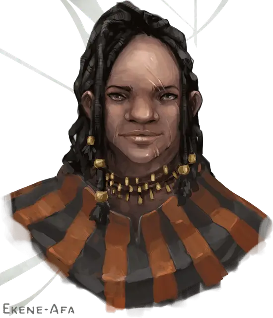

Экини-Афа
Ekene-Afa
Средний Гуманоид (Женщина чультка человек), законно-добрый, именной НИП

Класс Доспеха 16 (клепанный кожаный доспех, щит)
Хиты 112 (15к8 + 45)
Скорость 30 футов
| мод | спас | ||
|---|---|---|---|
| СИЛ | 18 | +4 | +7 |
| ЛОВ | 15 | +2 | +5 |
| ТЕЛ | 16 | +3 | +6 |
| мод | спас | ||
|---|---|---|---|
| ИНТ | 10 | +0 | +0 |
| МДР | 12 | +1 | +1 |
| ХАР | 15 | +2 | +2 |
Навыки Атлетика +10, Запугивание +5
Чувства пассивное Восприятие 11
Опасность 5 (1800 опыта)
Бонус мастерства +3
Особенности
Языки. Экини знает один любой язык (обычно Общий).
Храбрый. Экини совершает с преимуществом спасброски от испуга.
Жестокость. Рукопашное оружие причиняет одну дополнительную кость своего урона, когда Экини попадает им (уже включено в атаку).
Действия
Мультиатака. Экини совершает три рукопашные атаки или две дальнобойные атаки.
Копье. Рукопашная или дальнобойная атака оружием: +7 к попаданию, досягаемость 5 футов или дистанция 20/60 футов, одна цель. Попадание: Колющий урон 11 (2к6 + 4), или колющий урон 13 (2к8 + 4), если используется двумя руками для совершения рукопашной атаки.
Удар щитом. Рукопашная атака оружием: +7 к попаданию, досягаемость 5 футов, одно существо. Попадание: Дробящий урон 9 (2к4 + 4). Если цель — существо с размером не больше Среднего, она должна преуспеть в спасброске Силы Сл 15, иначе будет сбита с ног.
Реакции
Парирование. Экини добавляет 3 к КД против одной рукопашной атаки, которая должна попасть по ней. Для этого Экини должна видеть атакующего, и должна использовать рукопашное оружие.
Описание
Экини-Афа победила во множестве гладиаторских боев на арене Порта Нянзару прежде чем вложила свой выигрыш в первую торговую сделку. Она – легенда среди обычного люда, выросшего на её боях. Её муж Кура – художник. У них также есть близнецы-сыновья Сошен и Тайрик. Сошен работает в городской страже, а Тайрик – известный гонщик на динозаврах. Оба были названы в честь чультских рек.
Экини-Афа продаёт немагические щиты и оружие любого вида, но большая часть её товаров состоит из каменных ножей, иклв с деревянными рукоятями и обсидиановыми наконечниками (см. «Покупка особых предметов», стр. 32), и щитов, сделанных из деревянных пластин с натянутой на них шкурой ящера.
Экини-Афа платит Ваканга О’таму за зачарование отдельных предметов из этого списка, которые она затем продаёт по ценам, представленным в таблице «Магические щиты и оружие на продажу».
Магические щиты и оружие на продажу
| Предмет | Цена Экини-Афа |
| боеприпас +1 (за штуку) | 50 зм |
| щит +1, деревянный | 450 зм |
| кинжал +1 или иклва +1 (см. стр. 32) | 500 зм |